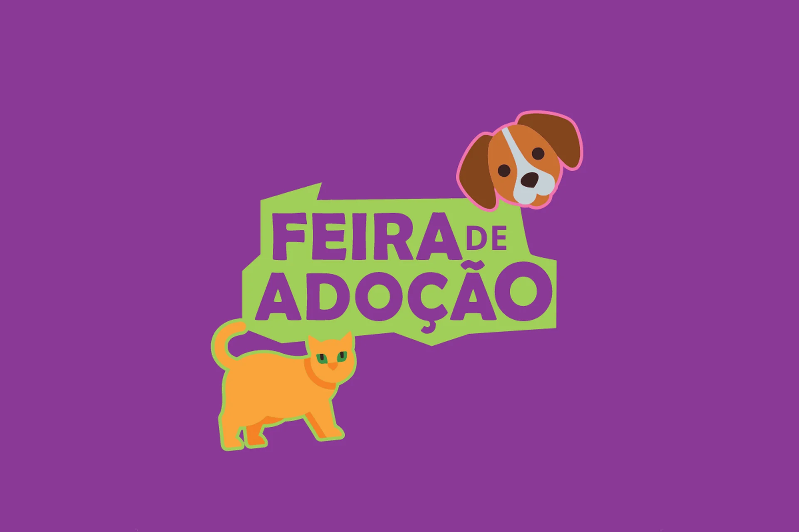
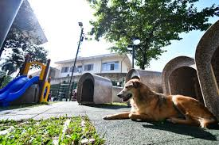

Acompanhe novidades, campanhas, resgates e ações em defesa dos animais.

Evento realizado em Vitória reuniu ONGs parceiras e dezenas de famílias.
Projeto social conseguiu arrecadar mais de 2 toneladas de ração.

Novo ambiente ajudará no resgate e tratamento de animais.